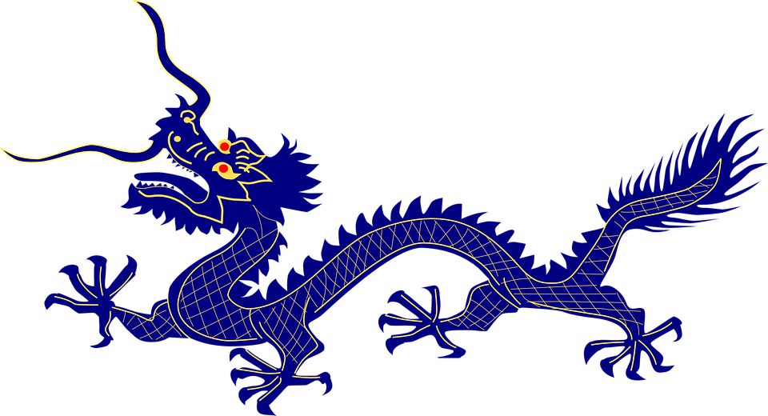
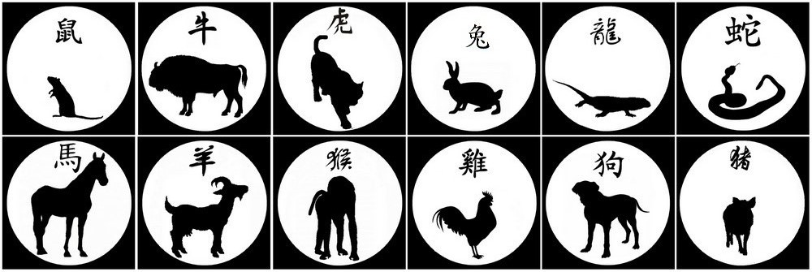

Astrologie
Selon la tradition, pratiquement dès l'origine de l'astrologie des 111 étoiles codifiée par l'Empereur mythique Huang Di en 2637 avant notre ère, les empereurs chinois en ont interdit la pratique à tout autre que les astrologues de leur cour, de crainte que des adversaires ne l'utilisent pour déterminer leurs périodes de faiblesse et tenter de les renverser. Prudents et pragmatiques, les Chinois anciens, un peuple d'agriculteurs, ont inventé des dizaines de systèmes astrologiques se rapprochant beaucoup de la numérologie, leur permettant de savoir à quel moment planter ou accomplir les actes importants de la vie. Ce serait à cause de cette obligation de ne plus regarder le ciel que, dans certains de ces systèmes, il n'est presque plus tenu compte des planètes, et que l'année débute le 4 (ou le 5) février et non pas au premier jour de la nouvelle Lune de printemps comme c'est le cas pour l'astrologie des 111 étoiles. Quelques exemples :
Le système des 28 demeures lunaires ne tient compte que de la Lune.
L'astrologie des 9 étoiles, quant à elle, est utilisée en Feng Shui et fondée sur le carré magique dans un cycle de neuf années tenant compte des directions des étoiles de la Grande Ourse constituée de l'étoile polaire et de huit autres étoiles.
Dans l'astrologie des quatre piliers du destin, les astrologues combinent les données astrales de la naissance ainsi que son heure et sa date avec les cinq éléments, selon un système complexe de binômes (annuel, mensuel, journalier et horaire qui forment à eux quatre une fiche d'identité) mis au point, selon la tradition, entre la fin des Tang et le début des Song par Chen Xiyi (陈希夷 / 陳希夷, chén xīyí), connu sous le nom de ziweidoushu (紫微斗数 / 紫微斗數, zǐwēidòushù) « données des maisons astrales Ziwei et Dou », les plus influentes.
Principaux astres
Les anciens astronomes chinois ont associé les cinq planètes principales aux cinq éléments, d'où elles tirent leur nom actuel : Jupiter est le Bois, Mars est le Feu, Saturne est la Terre, Vénus est le Métal, Mercure est l'Eau.
Les couleurs symboliques de l'astrologie chinoise de ces planètes sont :
- Le Blanc, couleur du Métal, en consonance avec Vénus et le Tigre Blanc à l'Ouest ;
- Le Bleu et le Noir, attribués à l'Eau, en consonance avec Mercure et la Tortue Noire au Nord ;
- Le Vert, attribué au Bois, en consonance avec Jupiter et le Dragon Vert à l'Est ;
- Le Rouge, attribué au Feu, en consonance avec Mars et l'Oiseau Rouge au Sud ;
- Le Jaune, attribué à la Terre, en consonance avec Saturne correspond au Serpent au centre ; il représente l'équilibre. Le Jaune est aussi la couleur de l'Empereur.
Ils pensaient que la position des planètes dans le ciel, ainsi que celle du soleil et de la lune, appelés Yang et Yin suprêmes (太阳 / 太陽, tàiyáng ; 太阴 / 太陰, tàiyín), et le passage éventuel de comètes au moment de la naissance influençaient la destinée.
Jupiter est particulièrement important car sa révolution, et non celle du Soleil, était utilisée jusqu’au milieu de la dynastie Han pour compter les années. Selon la religion traditionnelle, l’année chinoise qui commence appartient au dieu de cette planète, Taisui (太岁 / 太歲, tàisuì). Tous ceux qui sont du signe de l'année doivent lui faire une offrande au temple pour s'attirer ses bonnes grâces.

Maisons astrales
La zone autour de l’écliptique et de l’équateur céleste est divisée en 28 secteurs d'amplitudes inégalesxiù (宿, xiù), contenant chacun une étoile repère qui sert à repérer la position des astres dans le ciel. Bien que parcourus par la lune au cours du mois lunaire, le concept de maison lunaire a été créé par les astronomes indiens, et n'a pas été utilisé par les chinois. L’ensemble de ce « zodiaque chinois » est divisé en 4 quartiers xiàng (四象, sìxiàng), représenté chacun par un animal totem. Leur position est déterminée à la tombée de la nuit le soir de l’équinoxe de printemps. Les noms des maisons lunaires, difficilement explicables, sont très anciens : ils ont été retrouvés sur des objets funéraires datant des Royaumes combattants, et pourraient remonter aux Zhou. Il est donc difficile de connaître leur signification originelle, car le caractère qui les désigne a pu changer de sens. Néanmoins certains semblent désigner une partie de l’animal totem, comme jiǎo (角, jiǎo, « corne »).
De manière générale, les noms des astérismes chinois sont assez différents de ceux des 88 constellations occidentales. Par exemple, le chariot d’Ursa major est appelé « Les sept étoiles de la grande cuillère » (北斗七星, běidǒu qīxīng), en référence à Beidou, la boussole traditionnelle de divination taoïste en forme de cuillère (北斗, běidǒu, « cuillère Nord »). Le Baudrier d'Orion est connu sous le nom de shēn dont un sens est « trois » ; Orion représente donc les trois dieux de la Fortune, du bonheur et de la longévité.
Le quartier le plus au nord, dont l'animal totem, une tortue fantastique dont la carapace évoque une armure, s'appelle Xuanwu, « guerrier noir » (玄武, xúanwǔ), est particulièrement important. Il renferme dans la maison dǒu le chariot de la Grande Ourse (dǒu du nord) et l’astérisme nándǒu (dǒu du sud) dans le Sagittaire qui gouvernent les naissances et les morts. Sous le nom de Zhenwudadi, Xuanwu est aussi un dieu, esprit du ciel du Nord et de l'Eau dans la croyance taoïste.
Enceintes
Autour du pôle nord céleste, les Chinois distinguaient trois zones étoilées qui semblaient chacune cernée par une enceinte, d’où leur nom des « trois enceintes ».
L’« enceinte impériale » ou « enceinte supérieure » se situe autour d'α Ursae Minoris, autrefois considérée comme fixe, axe du ciel. On croyait que les étoiles et les dieux stellaires qu’elle abritait gouvernaient les destinées de l’empereur et de sa famille. L’« enceinte du palais d'en haut », ou « enceinte moyenne » autour du Lion, de la Vierge et de Cassiopée, gouvernait les ministres et fonctionnaires du palais. L’« enceinte du marché céleste » ou « enceinte inférieure » autour d’Ophiuchus, de l’aigle et d’Hercule représentait l'administration locale. Les étoiles et astérismes de ces enceintes portaient des noms en rapport avec leur symbolisme, titres officiels ou nobiliaires par exemple.
Les quatre gardiens célestes
Les vingt-huit maisons lunaires sont classées en quatre quartiers contenant sept constellations chacun. Ils sont identifiés à quatre créatures fantastiques, gardiens célestes. Les constellations ou étoiles notables auxquelles ils sont rattachés sont indiquées à leur suite :
La forme des animaux-gardiens ainsi que la répartition des couleurs se sont fixées sous les Han sous l'influence de la théorie des cinq éléments.
La licorne jaune (qilin) est associée au cinquième élément, la terre.
Signes chinois
Ils constituent un ensemble de douze animaux, ce sont, dans l'ordre : Souris ou Rat - Buffle ou Bœuf - Tigre - Lièvre, Lapin ou Chat - Dragon ou Lézard - Serpent - Cheval - Chèvre, Bouc ou Mouton - Singe - Coq ou Phénix - Chien - Cochon, Sanglier ou Eléphant.
Dans certains pays les ayant adoptés, le chat remplace le lapin et l'ours remplace le porc, il en va ainsi aussi pour d'autres animaux. Ces signes sont associés dans le cycle sexagésimal chinois aux douze rameaux terrestres, qui en combinaison avec les dix tiges célestes constituent le système chinois de décompte du temps le plus anciennement attesté.

Légendes
Des légendes relatent comment les animaux furent choisis et comment fut déterminé leur ordre. Le plus souvent, la sélection se fait par le biais d’une course sous l’égide de l'Empereur de jade, chef des dieux, ou du Bouddha. Parfois c’est le porc qui arbitre, et les incidents se multiplient du fait de son incompétence.
- Les trois anecdotes les plus connues :
-
La course s’achevant par la traversée d’une rivière, le bœuf, bon prince, aurait accepté de transporter le rat entre ses cornes. Mais au moment de toucher la rive, celui-ci sauta à terre, devançant le bœuf ; c’est ainsi qu’il devint le premier signe.
-
L'absence du chat serait due à la malice de son ami le rat, que l’Empereur de Jade avait chargé de convoquer les animaux pour la sélection des signes du zodiaque. Trompé par le rat, le chat se fâcha, et c'est depuis qu'ils sont ennemis naturels. Il a néanmoins été retenu dans la version vietnamienne où il remplace le lapin.
-
Lorsque l'Empereur de Jade organisa une fête avec 13 animaux qui peuvent aller dans des étoiles, mais le rat trahit le chat et ne le réveille pas quand il fait la sieste avant la fête, parce qu'il n'aime pas le chat.
- Arbitrage du porc :
Le porc avait réussi à persuader l’Empereur de Jade de le choisir comme juge de la valeur relative des différents animaux. Il commença par faire enrager le tigre et le dragon en les plaçant derrière le rat et le bœuf. Ils firent un tel scandale qu’il fallut les apaiser. Le singe dessina sur le front du tigre le caractère "roi" (王) qu’il porte toujours, pour lui confirmer son titre de souverain des animaux terrestres. Quant au dragon, le coq, qui à l’époque portait des cornes, les lui offrit en guise de couronne et il fut consacré roi des animaux aquatiques.
C’était sans compter sur le culot imbattable du lièvre. Il sortit des rangs pour défier le dragon à la course. Celui-ci accepta ; les deux adversaires allaient de front quand le lièvre se dirigea vers un bois. Les nouvelles cornes du dragon se prirent dans les branchages et il perdit. Il en blâma le coq qui, vexé, exigea la restitution de son cadeau. Le dragon lui répondit qu’il lui rendrait les cornes quand le Soleil se lèverait à l’ouest, et c’est depuis ce jour que le coq supplie tous les matins le Soleil de se lever de ce côté.
Le lièvre devait sa rapidité en partie au chien qui lui avait conseillé de couper sa queue autrefois longue. Après sa victoire sur le dragon, le chien vient le féliciter, espérant des remerciements. Mais le lièvre lui dénia tout crédit dans sa victoire. Furieux, le chien le mordit et fut placé en queue de la série en punition.
Quant au porc, ayant achevé le classement des animaux, il s’inscrivit lui-même en tête et alla porter la liste à l’Empereur de Jade pour approbation. Le dieu ayant eu vent des incidents le dégrada à la dernière place.
Le cycle sexagésimal
On peut combiner le cycle des animaux avec le cycle binaire Yin-Yang, chaque animal étant toujours associé à une année de même type ; le Dragon, par exemple, est toujours yang, et la Chèvre toujours yin. Dans le calendrier grégorien, les années paires sont yang et les années impaires sont yin (en toute rigueur le changement yin-yang se fait au moment du Nouvel An chinois).
Combiné avec le cycle des cinq éléments (métal (金, jin), bois (木, mù), eau (水, shuǐ), feu (火, huǒ), et terre (土, tǔ)), l'ensemble donne un cycle de soixante années différentes. On aura ainsi l'année du « Rat de métal », celle du « Bœuf d'eau », celle du « Tigre de bois ». Au Japon, l'anniversaire des soixante ans est fêté par une cérémonie appelée kanreki (achèvement du calendrier). Il est intéressant de noter que les désignations combinées années-éléments ne sont pas utilisées en Chine. Par exemple, bien que certains sites occidentaux qualifient l'année 2018 de "année du chien de terre", en Chine, l'année 2018 est simplement appelée "année du chien".
La tradition associe à chacun des éléments une couleur : Le bois est vert, le feu rouge, la terre jaune ou ocre, le métal blanc et l'eau noire ou bleue. Ces couleurs apparaissent parfois à la place des éléments sur les calendriers chinois à l'étranger : année du Coq vert ou du Tigre rouge, par exemple.
Dans les arrangements matrimoniaux anciens, les couples étaient assortis suivant la compatibilité de leurs signes. Par exemple, il était admis que deux Chiens n'allaient pas ensemble, mais qu'un Chien et un Porc était une bonne union ; l'union d'un Chien d'eau avec un Porc de bois sera bénéfique, contrairement à celle avec un « Porc de feu », parce que l'eau est bénéfique au bois (elle l'engendre), mais contrôle le feu (elle l'éteint), en fonction des principes de leur interaction selon la théorie des cinq éléments.
Contrairement aux signes chinois, chaque élément occupe à son tour deux années consécutives dans un cycle qui dure soixante ans. La première année, l'élément est Yang ; l'année suivante le même élément est Yin.
Le Nouvel An chinois
Comme le calendrier chinois est soli-lunaire, la date de changement de signe est celle du Nouvel An chinois qui se situe le jour de la nouvelle Lune (à la date de Pékin) comprise entre le 21 janvier et le 20 février.
Pour calculer cela, le 21 décembre est toujours compris dans le 11e mois lunaire chinois. Ce 11e mois est considéré comme étant le milieu de l'hiver. Le 12e mois lunaire est le dernier de la saison hivernale en Chine et le mois suivant est le premier du printemps, le nouvel-an chinois est fêté au premier jour de ce 1er mois du printemps.
Craignant pour leur sécurité et celle de la Chine, les Empereurs ont interdit de consulter les étoiles. Les dates du 4 ou 5 février ont alors été choisies pour obéir à l'interdiction et marquer le début de l'année chinoise de façon quasiment fixe.
Les Empereurs voulaient cependant continuer à consulter les horoscopes des 111 Étoiles pour leur usage personnel. N'ayant plus d'astrologue en Chine puisque c'était interdit, ils ont donc fait venir des astrologues d'autres pays, principalement du Viêt Nam.
Les signes chinois sont aussi utilisés par d'autres cultures asiatiques, vietnamienne et japonaise par exemple. Les services postaux de plusieurs autres pays émettent parfois un timbre de « l'Année du... », mais les pays peu familiers avec l'utilisation du calendrier lunaire chinois supposent que les signes changent le 1er janvier de chaque année.
Il existe une petite astuce pour calculer facilement la nouvelle année chinoise : le cycle recommence environ tous les 95 ans, ainsi en 1900 l'année a débuté le 31 janvier, elle a débuté le 31 janvier aussi en 1995 (attention cela peut varier de 1 à 2 jours).